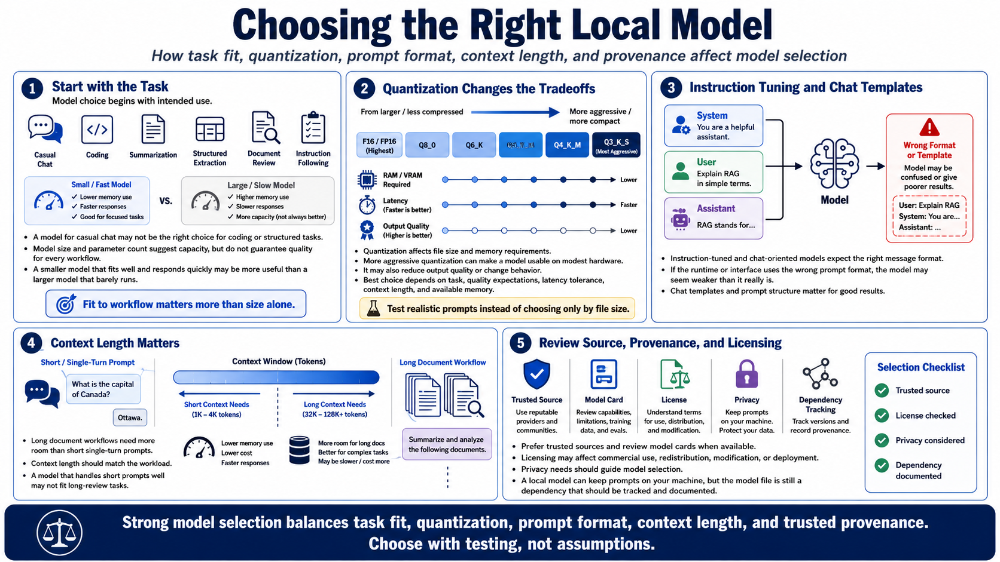

Choosing a Model for llama.cpp
Connecting to LMS... Progress: in progress

Narration
Choosing a model starts with the task. A model for casual chat may not be the right choice for coding, summarization, structured extraction, document review, or instruction following. Model size and parameter count give a rough sense of capacity, but they do not guarantee quality for every workflow. A smaller model that fits well and responds quickly may be more useful than a larger model that barely runs.
Quantization level determines how compact the model file is and how much RAM or VRAM it may require. More aggressive quantization can make a model usable on modest hardware, but it may reduce output quality or change behavior. The best choice depends on the task, expected quality, latency tolerance, context length, and available memory. Testing realistic prompts is better than choosing only by file size.
Instruction-tuned models and chat templates matter. A chat-oriented model is usually trained to respond to role-based messages and instruction formats. If the runtime or interface uses the wrong prompt format, the model may look weaker than it really is. Context length also matters because long document workflows need more room than short single-turn prompts.
Model source, provenance, and licensing should be reviewed before building workflows around a file. Prefer trusted sources and read model cards when available. Licensing may affect commercial use, redistribution, modification, or deployment. Privacy needs should also guide model selection. A local model can keep prompts on your machine, but the model file itself is still a dependency that should be tracked and documented.